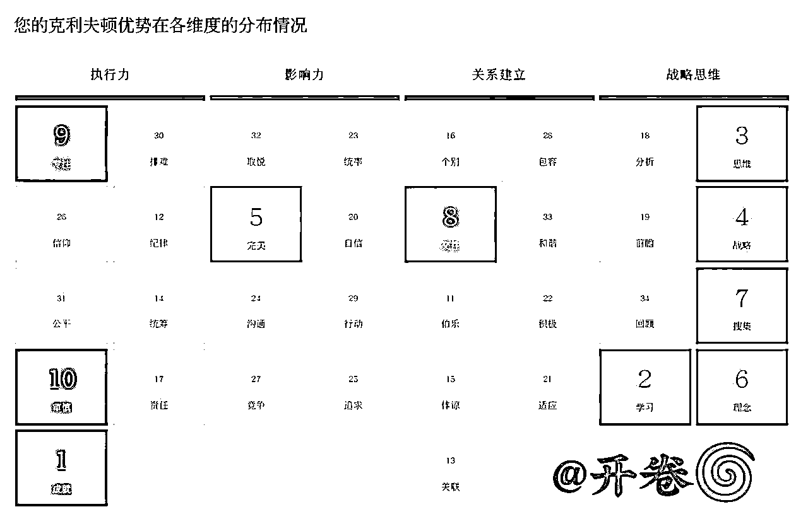
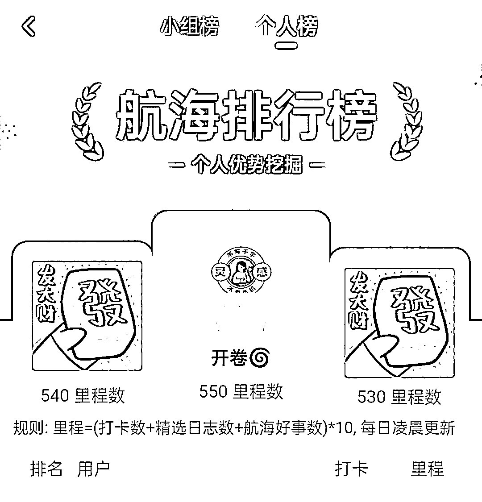
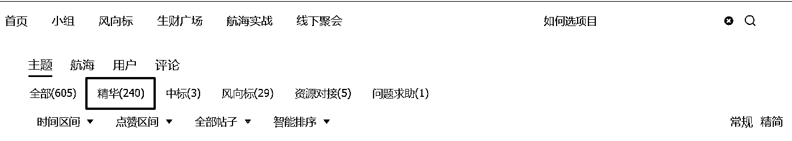

来源：https://yxy2hhcyyby.feishu.cn/docx/Q257d0cscoTRK6xGNW9cGB9CnHb
生财圈友好！
我是开卷，985写作硕士，6年文案，百万爆文作者，生财传术师，很高兴再次和圈友相见。
此前，我已经发了两篇精华帖：
第一篇是公众号爆文sop：
第二篇是自媒体内容质量提升：
第一篇帖子阅读破万了，第二篇也将近5000了，谢谢圈友们的支持。说来惭愧，生财两年了，我的成绩也不过如此，说来也庆幸，两年时间，我换了种人生。
2023年，开卷加入生财之前，手里的可支配资金不足4000块，其中还有2500，是我在上海的房租水电之类的基本生活支出，也就是说，花了将近2000块加入生财，我的沪漂生活也就到头了。
很多人以为我自由职业是因为我有6年文案经验，还是985硕士，但实际上，直接的原因是我失业了。在职上岸研究生之后，在招聘网站打了上千次招呼，却再也找不到和预期相匹配的工作。遇见生财，是人生的至暗时刻。
在此之前，我花了3年时间从月薪4K的电商文案做到月薪2W的外企内容主管，为了保住主业，完全没有独立搞钱经验。因为之前的工作成绩不错而产生盲目自信，生财第一年，连续踩坑，但是生财第二年，靠公众号爆文写出百万爆款，IP号也跑出了还不错的成绩。
从去年犹豫要不要续费生财至今，在生财积攒的经验，让我通过知识付费+协助朋友做短期项目+爆文流量主+分销，累计变现6位数，再也不寄希望于上班带给我所谓的稳定了。
2025年，看着很多新圈友加入生财，不知道有没有人和当初的我一样，在走投无路的时候，生财是唯一的光，如果你和当初的开卷一样，抛却职场光环，一无所有也平平无奇，或许开卷的经历，能帮你避坑，也给你一些希望。
必须先告诉你，开卷不是天选自由职业者，也不是天选自媒体人，只是一只搞钱笨鸟，把普通人能踩的坑全踩了一遍，慢慢探索出适合自己的路。
全文1.5W字，有故事也有干货，附上目录，你也可以挑感兴趣的部分直达：
2023年3月底，我盯着手机银行显示的3800+元可用余额，心里冷飕飕的，但就在同一天，我礼貌回绝了第5个面试邀请。是的，我也觉得我疯了。
因为算了笔帐：哪怕拿下月薪15K的工作，一个人干一个团队的活儿，在上海，扣除租房、通勤、外卖、职场社交这些“上班税”，努力3年后的时薪才30块，我就觉得我是真的疯了，才一直只是老老实实工作，总怕搞副业影响工作，在裁员潮时两手空空，是我只寄希望于打工该承担的后果。
人在刚开始做一件全新的事情的时候，总想找到某种熟悉感，并试图以此抄近道，以为这是所谓的捷径，但实际上，这可能是路径依赖导致的大坑。当年不懂这一点，总是试图以此前工作的熟悉感来获得做事的安全感，不管它是否合适，所以生财的前大半年，我都在踩坑。
首先说明，不是这些项目本身是坑，而是完全没有任何独立搞钱体感的我，盲目自信，所以这些项目都没做成，看起来踩的是项目坑，实际上踩的是对自己、搞钱和项目都不熟悉的坑。
23年刚加入生财那段时间，我还在做知乎，本以为是有手就会的项目，但不知道为什么，数据总是差点意思。
后来，因为做知乎的方式和我想做内容的方式有出入，实在做得太别扭了，加上在生财看到各种赚钱方式，就把全部精力投入生财。每天刷生财的精华帖十分上头，那段时间的感觉是，只要精华帖刷得足够多，下一个年入百万的就是我。
很快，生财航海开始了，我报了个人优势和小红书店铺，因为太需要客观理性的分析来确认，自由职业这件事，我也能行，至于小红书店铺，是因为我曾经做过小红书，感觉比较好上手，就以为做这个会比较有优势。
个人优势这条船，开营几天后，我的日志被醒醒教练点评说：是个能成事的姑娘，这句话，把我点燃了，后来，我像当初对待工作一样对待航海，最终卷到了第一。醒醒教练这句话，成为了后来很长一段时间里的光。


遗憾的是，小红书店铺这条船，我慢慢放弃了，一是时间精力不够，二是当时感觉做小红书店铺和纯粹做小红书内容，差距有点大，最重要的是，我发现自己在如何开店赚钱这方面的储备，基本为0，像个不会游泳但一脚踏入了大海的人，手忙脚乱，确实没有信心游向深海。
后来，看越来越多的人在小红书店铺这条船上拿到了成绩，我花了1个月去研究了电商逻辑，从端午做到中秋，选品、上品、投流……一顿操作下来，终于在朋友的帮助下赚到了将近1000块。
这期间，因为赚钱压力大，知道自己需要“补课”的地方很多，不上班的时间也多，就想着不能把鸡蛋放在一个篮子里，我至少得做出一个方向来。
所以，我用学到的选品方法，在小红书店铺试水，女装不行，我就试试百货，百货不行，我就试试做饰品，我想，只要我测试得够多，总有一个能试出来吧？
很遗憾，没有。即使像素级模仿对标笔记，不管有没有带商品链接，涉及商品的笔记流量，都大幅下跌。即使做测评账号，我的测评笔记也被关小黑屋了，后来才知道尺度把握不好的账号容易被判营销账号。
光是23年下半年，我做过12个不同的小红书号，但是变现也只有4位数，大部分方向不了了之，唯一出成绩的方向，因为后端不稳定而放弃。
后来年终复盘，发现这大半年我做过知乎（好物变现）、小红书（店铺、商单号、IP号）、抖音（图文种草、无人直播、短视频带货）、多多视频、视频号（直播带货）。
写了这么多，像是在写劝退帖，但确实都是我的血泪史，能力欠缺、经验不足、兴趣广泛、盲目自信、连续挫败、决策凌乱、压力山大等等原因堆叠在一起，频频遇挫之后，我像困在迷宫里，出不去了。
23年年终，虽然很emo，但是还是冷静下来想了想：难道我是天选打工人，根本不适合自己干吗？生财半年，我真的一事无成吗？未必，只是在独立搞钱这方面，人生的前二十多年，我长期处于“认知负债”，所以生财前半年，我都在补课。
家里有亲戚做生意，但我总感觉他们只是熬时间，不够体面，所以从没想过了解他们的生意好或者不好的原因是什么；前几年有朋友拉我合伙做工作室，并且承诺让我只干自己擅长的活，我连她的计划都没听，一听说“自己干”就直接拒绝了，因为没有风险承担能力……
现在回头想来，前些年我对近在眼前的能学着搞钱的机会视而不见，也因为没有风险承担能力而放弃提升自己抗风险能力的机会，所以陷入被裁才痛醒的僵局。进入生财之后，在做项目过程中，才发现我的认知局限不止于此。
① 凭感觉/经验选项目，而不是按照理性选项目
刚进生财的时候，不知道怎么选项目，大部分时候是听别人说做什么能赚钱做去做什么，以及哪些项目听起来我和之前的工作经验能沾点边就去选什么。
但其实，如何选项目，很多大佬分享过很丰富的方式，只是当时没有找答案的意识，但凡当初在生财官网搜一搜如何选项目的经验贴，就不会如此盲目。有人分享如何选项目这件事，是我续费生财之后才知道的，新手圈友如果看到这里，千万不要学我。
所以如果你是新人，如果你还没跑通0-1，如果你还不知道如何选项目和选什么项目，都可以在生财官网搜索，你看，连精华帖都有200多条，这不比拍脑袋决定靠谱？

② 只看别人赚钱的结果，不看别人赚钱的过程
别人做项目月入十万，但他可能为了月入十万，已经努力了5年，别人做矩阵年入百万，但他年入百万的前提是好友几万人，并且有成熟的产品。
开卷本以为，多看大佬的经历能增强自己的搞钱认知，但是只看结果容易打鸡血，也容易低估了做成一件事投入的各项成本。
尽管研究得太细致，容易自我劝退也容易做无用功，但只看结果就一头扎进去，往往会因为做项目的过程与预期不符而挫败甚至放弃。
③ 认为只要努力就有结果，但努力只是标配
在进入生财之前，开卷买过一些自媒体课，有人说做自媒体就是不停发，只要你足够努力，就一定有爆款，一定能翻身，曾经，我也以为是这样。
但开卷作废了很多账号，看到生财各位大佬的生财路径，才知道，努力只是标配，在合理的路径下用正确的方法努力，才有可能略胜一筹，跑出结果。
④ 错把热闹当结果
开卷做过万粉0变现的小红书号，也做过几千粉都没出单的图文号，也做过数据好看但收益不高的公众号，在一次又一次的直接经验中，慢慢对这些好看的数据祛魅了。
如果只是追求数据或者涨粉，你可能也会失望，如果你能在做某个项目的过程中找准核心需求是什么，才可能在这个项目上赚到钱。
很久之后才明白，可持续的赚钱模式，本质都是“解决特定人群的特定问题”，新手期最该研究的不是项目，而是 “判断项目的能力”，先去赚到第一块钱，比研究100个理论都有用。
盲选项目和认知不足，都会导致心态不稳，果不其然，虽然我看了大量的成功故事和精华帖，依然踩了很多新手搞钱的心态坑：
总等着别人给“标准答案”，不是想着在自己找答案的过程中解决实际问题，总是习惯被动接受信息。比如，我也曾反复问“现在做XX还来得及吗？”“我适合做XX项目吗？”
疯狂踩坑之后才知道，赚钱没有唯一解，都是开放式问题，找到答案最快的方法是了解核心思路之后去快速测试验证。
被不靠谱的知识付费坑过，被不靠谱的赚钱理念误导过，会认为赚钱=割韭菜，在公司做的都是大项目，对小钱没概念，也看不上只赚几百几千块的“小项目”
如果一直困在之前的经验和状态里，即使换了圈子也很难打开新局面；如果不能放下此前不靠谱的试错经验，你很难相信有人能用靠谱的方式成功；如果你不能放下成熟品牌做事的方式，很难体会一个品牌/产品从0-1的过程。
错一次就全盘否定自己，一次航海没有成果就觉得自己不适合这个项目，把试错当失败。
做很多账号之后才知道，哪怕很多的流量高手，前30条笔记也都是在摸索方向的，新号一发就爆，并且连续爆款的概率不高，新手航海21天的时间，如果连日更都做不到，期待出爆款，确实是对自己的要求比较高。
总想“搞个大的”，幻想“一炮而红”，对长期增长缺乏耐心，因为21天没跑出爆款，就觉得自己不合适，哪怕已经有好几条作品在同等级创作者的平均水平之上，想的不是如何完善，而是想着找有没有更好赚钱的项目。
每个人都想体验爆款，但能长期做下去的人，都懂得尊重周期。
不敢最项目有最基础的投入，比如想做家居博主，但家里不好看，总想着凑活做出爆款之后再投入，万一做不出水花没什么正反馈，投入不就打水漂了吗？比如想做公众号，能提升变现效率的工具不用，总想着有正反馈了再买工具，万一啥也没做出来，花的钱不就打水漂了吗？
但问题是，环境比较好的家居博主都未必能跑出来，环境不好还不想花钱改善，大概率是浪费时间，公众号同理，如果不想花钱，为了省几十、一两百，最后浪费了大几百上千块的收益。
后来，心态慢慢稳住了，我发现自己最核心的转变是三点：
踩了这么多坑之后算了个总账：我放弃了留在上海，也不想在武汉做累死累活才不到1W的工作，也就放弃了每个月攒5000的机会，光是这一块，一年的代价就是至少5W，再加上付费学习、搞钱工具和日常开支等等杂七杂八，不上班的代价，妥妥地十万出头了。那一年，算上各种小额进账，实际上还不到5000块钱，妥妥地营收为负。
吃一堑，长一智。年底焦虑得不行的时候，我真的想去找个班上，也纠结要不要续费生财。
连续挫败后，2024年元旦到春节，其实我在偷摸找工作，因为我也差点信了，靠自己是赚不到钱的，但我不甘心，所以过完年稍微整理了一下，就找到靠谱做咨询，因为如果再找不到出路，窟窿只会越来越大。
靠谱告诉我，我适合做账号，但一定要做出自己的能打的账号之后，我才意识到，我最大的问题，不是执行力太差，而是没有真正从打工人思维里走出来。除了打工人思维，曾经的工作经历，给了强烈的搞钱幻觉，才频频踩坑。
决定续费生财，就是因为我想解决这些问题，而这些问题，是上班无法解决的。
把对我而言最重要的4个搞钱卡点集中整理出来，生财第二年，就成了一场自定义的通关游戏：
很多人以为的打工人思维是：“我干多少活，你就该给我多少钱。”
开卷的打工人思维是：“公司选择我，就是重视，是恩赐，是救命，我要加倍努力，才能报恩。”
因为心里清楚文案找工作难，在中小公司升职加薪更难，长期以来的打工人思维，让我对录用我还给我升职加薪的公司有着深深的亏欠感和报恩心态，一边为公司卖命，一边有着深深的不配得感。
这样的心态让我长期主动加班，对需求有求必应，宁愿牺牲个人时间也要尽可能满足需求，但我有满满的工作热情和报恩心态，却没有分辨需求的能力。如果无法分辨不合理需求，就不知道哪些是低效甚至无效努力，很多时候都是执行力拉满的蛮干。
这样的思维惯性，导致了我在航海项目中，看到某个问题就去解决，看到某种玩法就去尝试，但没有思考过那些问题是否真的值得解决，别人的玩法是否真的适合当下的我，所以经常徒劳无功，事倍功半。
让我意识到这样的打工人思维困住了我的，还不止航海实战的连续挫败。
24年年初，我和几位博主合伙做了私教课，这次合作虽然给我带来了收益，但在这个过程中，我又不自觉地活成了打工人状态：只要在团队里，我就会有浓重的亏欠感、报恩感和不配得感，这些让我总是想方设法地把一切做到完美，努力成为团队的助力，而非负担。
问题是，我在团队里投入的时间越多，做自己的项目和账号的时间越少，拿到的成果越少，实际上给团队的助力越弱。就这样，我越努力，越是走进了无解的死循环。
和靠谱聊完，我也才真正清醒过来，我必须从打工人思维中走出来，既然加入了生财，就要用赚钱思维，先做项目跑出成绩，做出自己的标签和辨识度，这样不管和谁合作都能相互成就，而不是感觉高攀了所以自我拉扯。
赚钱的核心是价值交换，我首先要解决的是我能给用户带来什么价值的问题，而不是如何更好地和团队打配合的问题。
打工人思维惯性，是一直在“求认可”，用努力求市场认可，求客户认可，求领导和团队成员认可。但现实是，市场从来不看努力，只看结果。熬夜做出来的东西，如果没人想看，没解决用户的核心问题，没给团队带来业绩增长，那就是自我感动。
为了解决这个问题，我必须要从努力求认可，转向努力创造真正的价值。
那么问题来了，什么是真正的价值呢？
相信你在很多地方都看到过，很多人建议你，赚钱可以从你喜欢的事情出发，这个说法本身没问题，但赚钱也不能只看你喜不喜欢。
举个开卷的亲身经历，因为我写文案6年，硕士也是学写作，所以早期做小红书号，我就做过写作号。
那段时间，小红书刷屏的写作笔记，很多是房琪的文案拆解，很多人靠蹭房琪的流量出大爆款，开了写作课，而我的写作号坚持写自己做文案的思考和收获，都没水花，写“我真的无法欣赏房琪的文案”，只有个位数的阅读，曾经我也以为是写文案的方法和观念有问题，直到前段时间房琪塌房，我才发现很多人其实也不喜欢她的文案。
你看，光是考虑“我喜欢”，是远远不够的。我喜欢写作，但如果我不懂平台规则，不懂用户心理，不懂商业逻辑，只靠喜欢，都赚不到钱。
因为知道只靠“喜欢”赚不到钱，所以在生财什么都愿意尝试，但很多时候，依然无法突破“我喜欢”的惯性。
做小红书和抖音图文带货，我都做过女装，但都没做成，一个重要的原因是我喜欢经典款的衣服，不喜欢不耐看的设计款衣服，所以做图做不出别人的视觉冲击感，文案也不如别人的抓人眼球。
做小红书和抖音无人直播，我都做过百货，但都没做成，一个重要的原因是我喜欢真正意义上的“淘宝”，不喜欢美丽的废物，所以即使按照操作手册选品，但是运营重点总是不自觉地放在我更喜欢的产品上，相较于卖出榜单上的爆款，总是更期待有眼光的人买我挑出的精品。
做小红书和多多视频，我都做过饰品，但都没做成，一个重要的原因是即使找到了对标笔记，总想按照自己的审美偏好改点视觉，改点音乐，改点节奏，最后没做出来，不知道是选品能力不行，还是无意中改掉了对标的爆点。
此外，我还放弃了很多看着别人赚钱，但因为自己不喜欢就不想做的方式和机会。
喜欢≠能赚钱。你喜欢打游戏，不代表你能靠代练赚钱；你喜欢喝咖啡，不代表你开咖啡馆就能盈利。商业的本质是满足市场，而不只是满足自己。
很多人说，不喜欢，连做下去的动力都没有。的确，赚钱需要长期的投入，但喜欢不是全部，它只是起点，市场需求才是终点。如果你只做自己喜欢的事，却没人愿意买单，那这就是个昂贵的爱好，不是生意。
踩了很多次坑才明白，完全可以先找赚钱的事，在这个过程中去培养喜欢。很多赚钱高手一开始对行业也没兴趣，但他们发现市场需求后，越做越有感觉。“能赚钱”这件事提供的正反馈，就会让你慢慢喜欢上它。
当明白了不能只看自己的喜好时，我开始关心别人，不出意料地，这也是我搞钱路上的另一种高频卡点。
不知道你有没有这种时刻：看10篇精华帖，8篇都在说做小红书赚到钱，甚至赚到大钱的时候，你就觉得你也能靠小红书翻身；看20篇项目拆解的保姆级教程，你觉得只要记住这些，你就一定能跑通项目……
开卷曾经选项目、做决策，全靠看完别人经验贴之后的“我以为”，比如：看别人做知识付费年入百万，就以为自己也可以；看别人做短视频带货开了公司，就以为自己也可以！
实际上，我以为的，往往和现实差距巨大。
举3个开卷的例子：
我以为工作时做电商文案，严格遵守广告法的前提下把商品转化率从6%拉到14%，推动了产品、运营、法务各环节的优化，我就能靠此前的文案经验和市场认知，做好短视频带货，但选品、投流、供应链沟通、售后、平台规则等各个环节把我卡得动弹不得；
我以为做自媒体就是做内容涨粉，然后顺理成章地靠接广变现，但是我做成过万粉0变现的小红书号，成为了别人眼中的反例；
我以为做IP就是报名大佬的课程，然后参与分销，每天朋友圈刷屏，但实际上，没有实力，没有信任，没有新流量，根本没人买单。
和这些挫败体验类似的是，开卷做文案的时候，很喜欢看各种营销案例拆解和分析，打开梅花网、数英之类的网站，是上班的惯性动作，几年下来，我脑子里装了很多营销案例，但很少有直接用上某个案例拆解中的“干货”就能做成事的体验，为什么？
因为很多复盘拆解，是后置经验。比如开卷一周年的时候就想写复盘帖，当时定的主题还是以小红书避坑为主，那时的我完全不会想到，我大部分高光时刻，是公众号带来的。
别人的复盘可能字字句句都是真实的，但你完全复刻，却未必能有同样的效果，因为赚钱本就不是找到一个得分点就能赚一块钱的简单算术。
此外，你以为的，和别人实际表达的意思，可能因为某些认知差异，是有偏颇的，最典型的就是市面上有很多项目宣称“有手就会”，但你实际去操作的时候，会发现它是时间成本超高、单位时间收益超低、和价值观相违背的……
只看自己喜欢不行，只看别人怎么说也不行，这个时候，更难的问题就来了。
做项目初期，有道德洁癖，不想抄也不敢抄；做项目中期，为了赚钱，开始琢磨怎么有技巧有底线地“抄”；做项目连续挫败，心力不足不想努力了，想有个救世主把完全正确的答案塞我脑子里，完全照抄。
“抄答案”这个问题，是开卷在做项目的不同时期，都会反反复复遇到的难题。
就像开卷前面提到的一样，我想在小红书做写作号，但不想违背内心抄别人拆解房琪的爆款，写文案多年，我也把抄袭搬运作为不可触碰的底线，因为知道抄袭的代价很大，所以迟迟在原地踏步。
后来，小红书做到低粉变现，是我开始研究拆解别人的内容和变现逻辑，逐字逐句地分析别人的直播话术，也就是有技巧地“抄”，所以慢慢带着自我局限的镣铐，也做出了一些成绩。
更多的时候，是我想要靠自己赚钱，但不知道怎么才能赚到钱，我知道做小红书能赚钱，但总是想找到一个现成的参考模板，我知道做个人IP能赚钱，但总想找到一个充满确定性的路径逐帧复刻……我越是这样，越容易因为着急拿到结果而动作变形，因为一直看着别人的表面动作，但没有考虑过自己是不是真的适合。
虽然我嘴上不愿承认，但是我心里一直渴望有人，像个英明的将军或者强大的领导，给我一个100%正确的并且适合我的搞钱满分答案，我只用照抄就行，这种搞钱上的严重依赖“别人给我正确答案”的心态，让我很长一段时间竹篮打水一场空。
去年这个时候，找靠谱咨询明确了我的问题和出路之后，密集地刷了一些帖子和课程，终于对“赚钱不是对努力的奖赏，而是对认知升级的补偿”这句话有了更清晰的感知。
坦诚面对这一点，也坦诚面对自己的不甘心，我决定，无论如何，再续费一年，给自己一次重启人生的机会，因为在生财，我看到了很多打工看不到的玩法，我知道职场外的天花板，比内卷严重的普通公司，高得多。
生财第二年，当我把搞钱变成了通关游戏的时候，心态就有了些变化：
从依赖过往工作经验的答案，变成从圈友经验中找参考；从考虑“我是否喜欢”，变成“用户是否喜欢”，让用户喜欢的方式，我是否能接受；从“我以为这件事只要1、2、3就能成”，变成我看看其他圈友还有没有更多思考；从在“抄答案”中自我拉扯，变成享受找适合自己的答案的过程。
巧的是，看到自己最多问题的时候，也是我看到新的机会的时候。
去年年初，我发现曾经做小红书找对标时经常刷的很多爆款，在公众号疯狂刷屏，在靠谱介绍公众号爆文这个项目之后，我才发现，很多人靠这样简单的文字，日入三五百甚至四位数，而这些，都是我的认知盲区，让我心动不已。
在某个辗转难眠的深夜，我决定暂时搁置小红书，转向靠谱给我指的明路，从公众号爆文做起。
关于公众号爆文的方法，我在前面的两篇精华帖里已经写得十分细致了，今天想更多地和你分享，我是如何把生财当作业本持续刷题，慢慢找到钱，积累到第一个10W的。
现在回头看，我唯二反复看的航海手册，是个人优势和公众号爆文。
个人优势航海手册是因为全新的概念太多了，所以不多看几遍，完全记不住，脑子里各种概念经常打架；公众号爆文航海，是因为我在此之前，做过小红书、知乎和抖音，却完全没有做过公众号，可能是连续挫败的警醒，也可能是一无所知的敬畏，公众号航海手册我前前后后通读的不下7遍，不包括针对特定问题去找答案。
航海手册有两类读法，一类是：已阅，赶紧试试；一类是：看完了，但还有几个逻辑上的卡点没想明白，再看一遍。
你觉得哪一类的成功概率更高？不知道别人是什么样的，开卷做小红书是第一种，做公众号是第二种。
公众号航海之前，我就做了属于自己的公众号爆文思维导图，从纯粹的学习，到把圈友做爆文的经验内化成自己的，在航海之前，脑子里有了一张藏宝图，遇到具体的问题，要么知道答案，要么知道去哪里找答案，要么知道这是做项目过程中可能遇到的常见卡点。胸有成竹，才能稳住心态。
两年生财，我参加过11次航海，航海过程中90%的问题，航海手册都有答案，剩下的10%，可能是经验和认知不足导致的自我设限、心态不稳、过度焦虑等等。生财两年，我也从当初参加航海遇到问题张口就问的人，变成了有问题先去航海手册找答案的人。
如果你想知道某个项目是否适合你做，除了问别人，可以直接去看航海手册，因为别人未必了解你，但是航海手册可以让你了解某个项目的全局；如果你正在做某个项目，遇到了具体问题上的卡点，不管是否在航海，都可以去航海手册找答案，有时候看起来是单个问题，但是需要全局思维才能找到解法。
熟读了航海手册，你对怎么跑通某个项目就会有整体认知，但是，你依然可能有些问题不知道怎么解决。
比如航海手册里写了七八种赛道，但你依然不知道怎么选定适合你的赛道，这个时候可以去看看精华帖。
如果你和开卷一样，基本没有资金投入，你可能就可以参考我的路径，但如果你和某些圈友一样，有项目启动资金，有投流预算，甚至有团队作战的计划，那么就要参考类似的经验帖子，选择更适合你的，投资回报率更高的方案。
刚进生财看精华帖，开卷总是看别人的成功，打压自己的“不争气”，但如果你这样使用精华帖，你会觉得生财会让你非常焦虑。只有看到别人的经验帖里对自己有价值的内容，才是真正get了精华帖的精华之处。
更日常的用法是，当你需要解决一个具体而明确的问题，就把生财当知识库，直接去搜相关的帖子。
比如开卷不管做什么平台，都要搞定流量问题，所以我不止一次，在生财找关于流量的精华帖，多刷一些帖子，就能多了解一些玩法，对流量就会有更深的认知。
在开卷眼里，航海手册就是“通用参考答案合集”，而精华帖，就是具体问题具体分析的参考思路，找到和你的情况相似、思考方式类似的精华帖，无异于做了一次深度的1V1咨询。
新手做项目很容易有挫败感，一个个别人做起来很顺畅，自己怎么都搞不定的小问题，容易加深焦虑。
如果你只看生财精华帖，只看到拿到结果的人，你可能会越因为看别人的优秀而越感到焦虑。如果你在能力还是小白阶段，就在结果上对标大佬，你就会感觉自己太渺小，甚至因为觉得自己和世界差距太大而自我劝退。
但是，你看的很多精华帖是已经拿到结果的人，就像你刷到的自媒体爆款，是已经跑赢了算法的账号。
最好的方式就是去参加航海，看看和你同一方向，相同水平的人目前都在关心什么，也可以看看航海群里从LV1到LV10+的人都在关注什么，你会很明显地看到，不同阶段的人关注的问题不一样。这很正常，别人比你走得远一点，可能只是他比你早出发一点。
在航海群，你可能会找到步调一致的航海搭子，可能会遇到为你答疑解惑的大佬，会遇到多啦A梦一样的教练，会遇到贴心的领队和志愿者，整个航海群，可以是你做项目期间强大的支持系统。支点越多，心态越稳。
如果你参加航海，如果你在航海群善于观察，你会发现，最好的升级打怪策略是动作上对标大佬，结果上对标过去的自己。
第一年疯狂踩坑的时候，开卷没有写复盘帖子，因为以为没有拿到结果，就不值得复盘。
但你有没有想过，什么样的算拿到结果了？
日更21天小红书，涨粉了但没变现，算拿到结果吗？发公众号文章，引流了但没出单，算拿到结果了吗？全程航海跟下来，发现某个环节或者某些动作让你特别内耗，感觉某个路径可能不适合你，算拿到结果了吗？
答案可能因人而异，但开卷想提醒你的是，如果你没有复盘的意识，你可能参加完航海不到一个月，你之前做过什么都全忘光了，如果你没有复盘的计划，你可能连航海目标是什么，都忘光了。
如果你的航海目标就是涨到1000粉开通蒲公英，那么只要你做到了，就算拿到结果了，如果你发公众号就想私域每天增加20人，只要目标达成了，就算拿到结果了，哪怕是你排除了一条不适合你的船，也是在及时止损，在开卷看来，这都是结果。
开卷也是去年开始写复盘帖，才意识到这个问题，很多人关注0-1的闭环，但对像我这样的搞钱新手，0-1需要时间，如果做小红书，这一次航海搞定了涨粉，下一次航海接了第一个商单，下下次航海定下了自己的产品，之后的航海着手打造IP，这也都是结果，都是你搞钱链条上的关键节点。
如果你和我一样没有搞钱基础，如果你和刚入生财的我一样还在盲目试错，不妨试试，每次航海以复盘帖为最小闭环，比如公众号航海赚钱了，就写做爆文的复盘，参加了3次公众号航海我写了对公众号的思考，紧接着写了内容优化的复盘，再后来参加AI航海，目标就是全方位的提效，航海结束之后就写了提效成果的复盘。
复盘帖未必都是跑通赚钱的0-1，从0-1过程中的每个关键点都很有价值。最重要的是，有了写复盘帖的意识，你的航海就会有核心目标，不会今天焦虑涨粉，明天担心赚不到钱。
当我盲目自信，也没有好好探索生财的时候，接二连三地踩坑，当我对自己有了认知，并且用正确方式打开生财之后，解锁的却是：
24年5月，决定做公众号，开始关注公众号相关的帖子和之前的航海手册；
24年6月，公众号爆文跑出百万爆款；
24年7月，写了第一篇复盘帖，拿了精华；
24年8月，研究其他圈友的精华帖，探索批量做内容和矩阵玩法，解锁了新赛道和新玩法；
24年9月，参加公众号爆文航海，赶上小绿书风口，累计变现4位数；
24年10月，调整做公众号的思路，开始做IP公众号；
24年11月，IP号30天涨粉4000+，每天都有私域新增流量；
25年1月，写第二篇复盘帖，第二次拿精华；
25年2月，结合AI精华帖，密集使用AI探索做账号的其他可能性；
25年3月，AI航海开船当天做出的小产品，完成最小闭环，学会用AI做插画vlog和口播视频；
25年4月，航海结束，AI辅助提效300%，写完了AI提效复盘帖和生财两周年复盘帖。
两年以来，开卷的生财之路经历了4个阶段：
23年4月-12月：盲目踩坑期，营收为负；
23年12月-24年5月：反思调整期，有进账，但不稳定；
24年6月-25年1月：公众号实操期，集中变现和意外惊喜；
25年2月至今：公众号调整期，研究IP和提效。
我的第一个10W，有用生财学到的技能做知识付费，也有用生财技能帮朋友做短期项目，有公众号爆文流量主，也有大佬产品的分销，解决很多之前一个人搞不定的问题之后，才突然意识到，赚钱就是不断解决关键问题、满足核心需求的正反馈。
这段时间，我一直在想，如果生财有和我当年处境十分类似的圈友，我会给他们什么建议，这些是开卷最有感触的6点，和你分享：
无论是我曾月薪2W，还是我的985毕业证，都是自由职业初期的阻力，因为在亲戚朋友眼里，安稳的工作，才是人生正事，我不上班，就是抱着金矿讨饭吃。连续踩坑的那段时间，我面对的压力，除了存款、挫败感，还有至亲好友的质疑。当然，和遇挫一样，次数多了，也就麻了。
如果你还没有正反馈，或者正反馈不强，最大的问题，可能是心力问题。你可以让大佬给你建议，也可以刷精华帖，看名人传记，刷别人的成功故事……
开卷最想给你分享的，其实是梳理自己的「弹性时刻」，比如，开卷给你分享几个自己的：
√ 初中作文被老师嫌弃文笔太差，从不点评，但半年后我上稿了杂志，拿到了人生第一笔稿费，之后频频参加作文竞赛；
√ 高中作文被同学质疑和攻击，但一年后作文大赛拿了全国二等奖；
√ 高中有过一段时间的严重厌学，但只用了半年多从数学30+分（满分150），地理10+分（满分100），到数学稳定130+，地理稳定90+；
√ 大学毕业面试了近百家公司才找到一份工作，但努力3年，从月薪4K到2W……
那些别人都不看好你，但你自己争了一口气换来的反转，就是你的「弹性时刻」。
开卷密集受挫的时候，也曾以为所谓的成功故事都是吸引眼球的套路，所谓的成功方法都是陈年的鸡汤，但就是这些亲身经历的备受打击却有意外惊喜的时刻，让我一点点恢复了心力。
毕竟，看别人的故事，你收获的是二手经验，你的「弹性时刻」，是你真实战斗力的一手经验。
如果你和我一样采用“题海战术”，在生财大量刷题，你可能会遇到一个问题：做了很多题，但分数一直上不去。
我猜，一定有朋友和我一样，小时候和别人一样刷了习题集，但一看答案就会，一做题就废。
和小时候大量刷题不涨分一样，做生财实战刷题，你也可能只是看多了帖子记住了答案，但没理解核心逻辑。
开卷在好几个项目上都有这样的体感，明明这些题我都背会了，如果是文字形式的考试，我可能可以拿90+甚至满分，但一到实操，就各种出问题。
那现在我会怎么做呢？
比如我曾经作废了十几个小红书号，我现在再去做小红书，就会先考虑我的定位是不是和别人相同或者相近，其次，别人的变路径我能不能搞定，如果可以，再考虑别人的内容形式我能不能搞定，如果可以，我再看别人的更新频率和运营策略我能不能搞定，如果一切OK，那么这个博主可以作为对标。
而不是，今天看谁火了，就去做这个赛道，明天看谁赚钱了，就去看看那里能不能捞一笔。
如果一次次的航海结束，一篇又一篇的精华帖看完，你解决问题的方式，还和之前一模一样，就一定要警惕伪勤奋，小心盲目地自我感动。
拒绝伪勤奋，最好的解决方案就是，参加航海带着目标去，刷帖子带着问题去，认准你当下最想搞定的搞钱问题去努力，而不是把玩法和规则背得滚瓜烂熟。
参加3月AI航海，开卷最大的感触是一定要停止单纯的学习。学习是解决问题的方式而不是最终目标，什么意思？我学AI是为了提效，我学做IP是为了放大优势，我学商业是为了看准机会……
看起来很功利是吧？我曾经也不喜欢别人非常功利地学习，但结果呢？漫无目的的学习，多是自我感动，可能只是增加一点看起来了不起却没任何实际作用的谈资。
还有一种集邮式学习的心态非常害人，看到有意思的就先学再说，想着反正早晚用得着，所谓技多不压身。
这条路我也走过，但现在想来，这条路至少有两大bug：
第一是你学的和你做的可能是两套系统，完全不兼容。
开卷做文案时学的是顶尖的广告文案人的一套系统，但工作中，很多甲方老板还是喜欢9.9包邮，欣赏不来广告人的理念和质感。
刚做自媒体，我也曾用学过的文案框架在小红书写过“我真的无法欣赏房琪的文案”，但没有起过任何一丁点儿波澜。
当时的我看不懂很多互联网吹爆的文案，还一度以为自己白学了，现在回头看，只是我没有写过社媒文案，完全没有网感，也完全不懂新媒体和流量逻辑而已。
还好现在稍微懂一点，不然可能就在这两套系统里，疯狂拉扯，持续自我攻击。
第二，如果你学了没有用武之地的东西，很快就忘了，就像学车不买车，不到一年科目二科目三都忘光了一样。
除此之外，如果你和从前的我一样，持续学习，但经常因为学会了一样东西就觉得它不过如此，就千万千万千万更不要沉迷于学习。
因为你学会了，不会沉浸在学会新东西的喜悦里，而是立刻推翻曾经的自己，然后继续学新东西。
如果你不做事，到最后就会学来学去一场空，越学习越内耗，爬得越高，心里越虚。
只有密集做事，在打怪升级的路上留下一座又一座里程碑，你才不会因为学到新东西，就急于否定过去的一切，而是回头看，竟已硕果累累。
我喜欢长期主义，但我更愿意把它当做一种心态，而不是一种决策方式。
开卷自己，我的亲戚朋友，我的网友，没有做过自媒体的人，都问过一个问题：自媒体能做多久呢？
与此类似的还有：公众号还能做多久呢？小红书的红利期还有多久呢？DeepSeek还能火多久呢？
越是考虑一件事还能做多久，越是难真正地投入一件事中去，因为你会一直焦虑你没赶上风口，害怕做的都是无用功。
但开卷如今理解的长期主义是，即使你现在开始做公众号，也能掌握自媒体运营经验，之后有新的自媒体平台，你的运营经验同样可以迁移，即使你现在开始用DeepSeek，你和AI沟通的方式，也能用在以后和AI协作的流程中。
长期主义指向的，不是单个的项目或者风口，而是一系列底层能力，比如思考、写作、决策、执行等等。
在生财，你可以看到有很多大佬是靠单个项目年入百万，也有大佬是综合收入累计破百万，长期主义带来的期待是，今年能靠某个项目或者路径收入几万，之后也能靠这段时间积攒的经验在其他项目上赚到钱。
做第一款小产品，小红书直播3小时才成交1单的时候，我就考虑过无人直播；私教服务交付过重，没时间做流量的时候，我也考虑过自动化；公众号单号能赚上万的时候，我也考虑过批量。
赚钱就是这样，你没解决的问题，会反反复复找到你。
你可以参考大佬的解决方案，但它们只是可能性之一，不是唯一解，现在的你无法复制大佬的同款路径，有时候也很合理，不用过分苛责自己。
开卷想和你分享的是，适合你的路径，未必是你想象中的那个路径。
曾经我以为我能靠小红书+私域年入30W，后来我以为我能靠公众号年入30W，期间我也以为我能做自己的产品+分销大佬的产品年入30W，但现在，靠知识付费+公众号+分销+短期项目先拿到了第一个10W，感觉也还不错。
定位是测出来的，路径是跑出来的，承认自己有优势也有短板，做个敢认账的大人，也挺不错。
虽然加入了头部搞钱社群，也听很多大佬说要大胆收钱，但很长一段时间里，我没有勇气收钱。
后来是因为什么呢？开卷给你分享一个亲身经历：
回老家之后，除了工作，我会主动去帮父母分担一些压力，做的最多的是，在爷爷奶奶生病住院，而父母长辈都在工作的时候，陪床、跑腿、满足他们的一切需求。后来，爷爷奶奶出院，坚持要给我几百块钱，这个时候，如果是你，收不收？
我相信大部分人的第一反应是坚决不能收，是吧？和你们一样，我也是。
但奶奶说：如果你不收，那我以后有事都不敢麻烦你了！本以为是开玩笑，但我转头想到了开精品水果店的亲戚。
每次我们去买水果，她不仅按底价卖水果给我们，还经常送贵价水果给我们。如果是你，你还敢经常去吗？是不是不敢？本来我可以给她介绍长期客户，她可以赚的更多，我们也能吃到高质量的水果，但她不正常收钱，反而送水果赔钱，我也不好意思往她家跑。
想起这个亲戚，我收下了奶奶的钱，因为人有感情，就会有亏欠感。
你以为免费/低价是你该做的，别人感受到的可能是她给你添麻烦，因为心中有亏欠，反而不敢再找你。
只要花了时间，认真对待每一个需求，切实帮到了别人，就可以收钱，哪怕是亲戚朋友同事，只要别人真心愿意付钱，你就可以大大方方收下。毕竟，你不收钱，她反而可能在其他地方花更多冤枉钱。
后来，奶奶给的钱，我给她买了新衣服，新帽子，给她买了老人舍不得买的好吃的糕点，看着她去别人家吃席都穿着我给她买的外套，戴着我给她买的帽子，拎着我给她买的小包，心里也是满满的幸福感。
是的，你完全可以大大方方地收钱，然后聪明地花钱。这或许，也是赚钱带来的幸福感之一。
写在最后
很多人听说我做自由职业，还能写出百万爆款，觉得一定是因为我写了6年文案，还是985写作硕士。
但其实，我和大部分普通人一样，就是普通本科毕业，因为没技术、没人脉、甚至还社恐，所以才选择了做文案，因为知道大部分文案岗十分被动且别无选择，所以写文案写了6年，因为知道我这样一无所长的普通人在上海没有竞争力，所以才选择了提升学历，以为这样就能拥有通往大厂的门票。只不过，比大厂橄榄枝先来的，是裁员潮。
说了这么多，其实就是想告诉你：6年文案、985硕士和百万爆款都是某一天的某个选择的结果，而不是互为因果。
同理，开卷今天写帖子和你分享，不是因为前面的几个身份标签，而是因为，前几年的我，失业了。
如果你此刻迷茫、焦虑、失业、职场瓶颈乃至人生瓶颈，希望开卷这个算不上逆袭的故事，能给你一点勇气，走下去，天会亮的。
这是我的第4篇复盘帖，写这篇帖子的时候想起刚入生财的兴奋，做项目求而不得的失落，换赛道时心惊胆战的纠结，出爆款时做梦一样的恍惚，赶上风口时停不下来的鸡血……除了惊喜，更多的是感恩，谢谢靠谱@梁靠谱 带我进生财，给我做定位、选项目，指导我写复盘帖，鼓励我去做更多高价值的事，谢谢11次航海的教练、领队和志愿者们，每一次航海都有非常棒的体验，不善社交的i人也能跟上大部队打怪升级，谢谢生财圈友们分享的风向标和精华帖，让纯小白也能长出搞钱脑。
在生财的第3年，希望能拿到更多的结果，写更多的复盘，交更多的朋友，见证更多圈友的生财时刻。
2025，祝我们，生财有术，重启人生，亦有术。